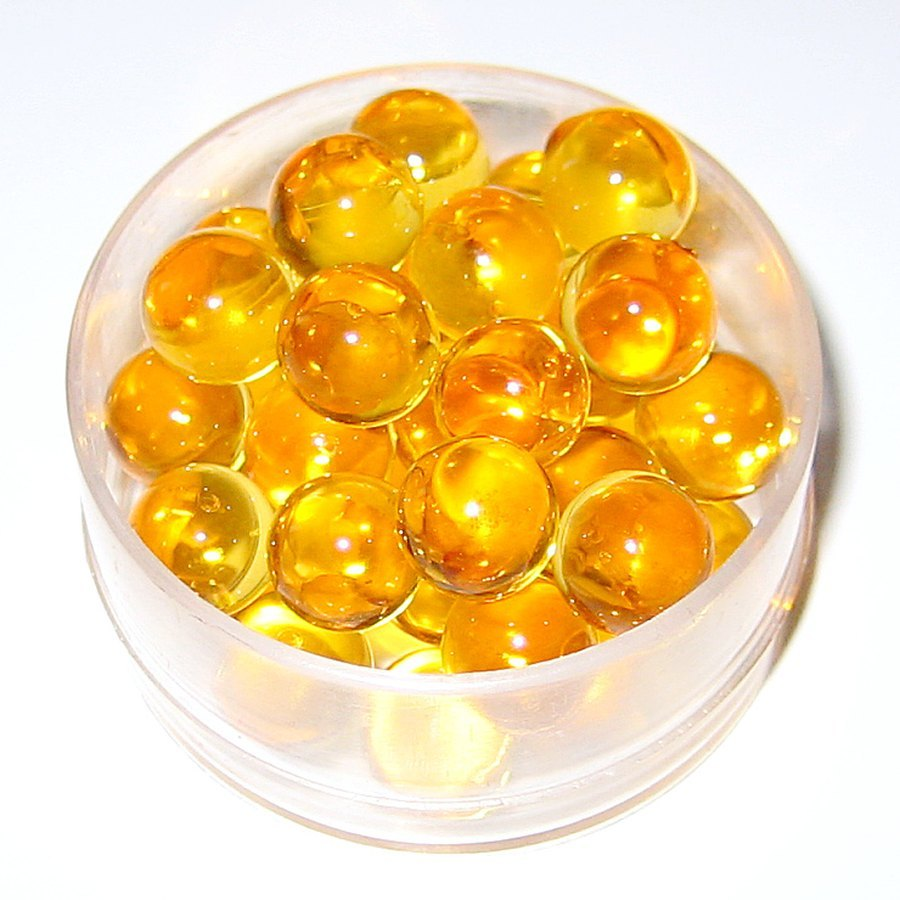

Adderall and Long-Term Memory: What Stimulant Use Does to Recall
Adderall is one of the most prescribed medications in the country, and one of the most misunderstood when it comes to memory. Here's what's actually known, and what still isn't.

Key takeaways
- Short-term, Adderall improves attention for people with ADHD, which can look like a memory boost simply because more information gets noticed and encoded.
- Long-term human data on memory is thin. Most research covers weeks or months, not years, so firm conclusions about decades of use aren't available yet.
- Sleep is the hidden variable. Stimulants that disrupt sleep can indirectly hurt the memory consolidation that happens overnight.
- Off-label use in people without ADHD doesn't reliably improve memory and adds real medical and legal risk.
- Nothing here is dosing advice. Adderall is a controlled prescription medication; any changes belong with your prescribing doctor.
Short answer: taken as prescribed for ADHD, Adderall's effect on long-term memory looks more neutral than harmful in the research available so far, but "so far" is doing real work in that sentence. Long-term, controlled human studies are limited, and most of what's known comes from shorter trials, animal research, and observational data. If you're weighing a prescription or wondering about years of use, here's the honest picture.
What is Adderall, and how does it work?
Adderall is a brand-name combination of amphetamine and dextroamphetamine salts, prescribed mainly for ADHD and narcolepsy. It's a central nervous system stimulant, and it works largely by increasing dopamine and norepinephrine activity in the brain. Those two chemicals are heavily involved in attention, motivation, and how effectively the brain filters signal from noise. It's a controlled substance in the United States because of its potential for misuse and dependence, which is part of why prescribing and monitoring matter.
Does Adderall improve memory in the short term?
For people with ADHD, yes, in a specific and limited sense. Attention is the gateway to memory. Information you don't notice in the first place never gets encoded, no matter how good your underlying memory systems are. By improving sustained attention, Adderall can help someone actually register and hold onto information they'd otherwise miss, which shows up in some studies as better task performance and working memory scores while the medication is active.
That's different from claiming the drug directly strengthens memory itself. It's closer to clearing static off a signal that was already there.
What does long-term use do to memory?
This is where the evidence gets thinner. Most controlled studies on stimulant medication and cognition run for weeks or a few months, not years. Long-term safety data leans heavily on the fact that Adderall and similar stimulants have been prescribed for ADHD for decades without a clear signal of population-level memory decline showing up in that time. That's reassuring, but it isn't the same as a dedicated, long-running study that tracked memory specifically over ten or twenty years of continuous use.
Put plainly: there's no solid evidence that appropriately prescribed Adderall causes long-term memory damage, and there's also no long-term study rigorous enough to rule every possibility out. Anyone with concerns about years of use is asking a reasonable question that current research can only partly answer.
Why is sleep the wildcard here?
Sleep is when the brain moves the day's experiences into longer-term storage, a process researchers call consolidation. Stimulants, by design, can make it harder to fall asleep if taken too late in the day or at a dose that runs past the intended window. Poor sleep on its own is one of the best-documented causes of next-day memory trouble, independent of anything a stimulant is doing neurologically. For someone whose Adderall dose or timing is quietly wrecking their sleep, the resulting memory complaints may have more to do with hours of rest than with the medication's direct effect on the brain. Our guide to sleep and memory covers why that overnight window matters so much.
COMPLEX
The memory formula we rate highest in 2026
Advanced Memory Complex takes a different route than a stimulant: citicoline, bacopa, phosphatidylserine and B-vitamins on a fully transparent, clinically-dosed label, backed by a 60-day guarantee.
See Today's Price →What about people without ADHD who take it to study?
Using someone else's Adderall, or taking a personal prescription off-label to cram for an exam, is common on college campuses. It's also not backed by the evidence people assume. Research on healthy adults using stimulants for cognitive enhancement shows mixed and often modest results. Some people report feeling sharper. Objective testing frequently shows smaller gains than the subjective feeling suggests, and a short-term attention boost while awake doesn't automatically mean better memory formation or recall days later.
There's also a legal and safety layer worth being blunt about. Using a controlled substance without a prescription and without medical monitoring carries real risk: unpredictable dosing, unknown interactions with other medications, and a higher chance of dependence than most students weighing "just for finals" expect.
What are the other long-term risks to know?
Stimulant medications carry known risks beyond memory that are worth knowing about, even briefly. Cardiovascular strain, appetite suppression, anxiety, and the potential for dependence are all documented in prescribing information and monitored by prescribers over time. None of these directly proves anything about memory specifically, but they're part of why long-term stimulant use is meant to be a supervised medical decision rather than a set-it-and-forget-it routine.
Are there ways to support memory alongside treatment?
If you're on Adderall for ADHD, the same basics that help everyone's memory apply to you too, and they often matter more given the sleep and attention factors already in play. Consistent sleep timing, regular movement, and a diet that doesn't leave you running on empty all support the same consolidation process a stimulant can't replace. Our full guide on how to improve your memory walks through the habits with the strongest evidence, and our piece on ADHD and working memory looks specifically at how attention and memory interact for people managing the condition.
Who should be cautious?
Anyone with a history of heart problems, high blood pressure, anxiety disorders, or substance use should discuss those specifically with their prescriber before starting or continuing a stimulant. People who notice new memory complaints, mood changes, or sleep problems after starting or adjusting a dose should bring that up rather than waiting it out. None of this is a reason to panic about an existing prescription that's working well. It's a reason to keep the conversation with your doctor open rather than treating the initial prescription as the end of the discussion.
Frequently asked questions
Does Adderall damage memory over time?
There isn't strong evidence that Adderall, taken as prescribed for ADHD, causes lasting memory damage. Long-term human data is still limited, though, so this is more "no clear signal of harm" than a guarantee of safety. Talk to your prescriber about anything that changes.
Does Adderall improve memory in people without ADHD?
Not reliably. Research on healthy adults using stimulants for cognitive enhancement shows inconsistent results, and any short-term focus boost doesn't necessarily translate into better memory formation. It also carries real risks when used without a prescription or medical supervision.
Can Adderall cause memory loss if I stop taking it?
Stopping a stimulant can bring back the attention and focus problems it was treating, which can feel like a memory issue even when it isn't. Some people also report a period of fatigue or low motivation after stopping. Any changes to your prescription should go through your doctor.
Why does poor sleep matter so much for Adderall users?
Sleep is when the brain consolidates the day's memories into long-term storage. Stimulants taken too late in the day, or at doses that disrupt sleep, can interfere with that process indirectly, even if the drug itself isn't touching memory directly.
Supporting memory through everyday habits?
A prescription decision belongs with your doctor. For the diet, sleep and nutrient side of memory support, see the formulas our editors rate highest for 2026.
See the Top 5 Memory Formulas →Related: ADHD and working memory · Sleep and memory · Dopamine and focus · Best memory formulas of 2026